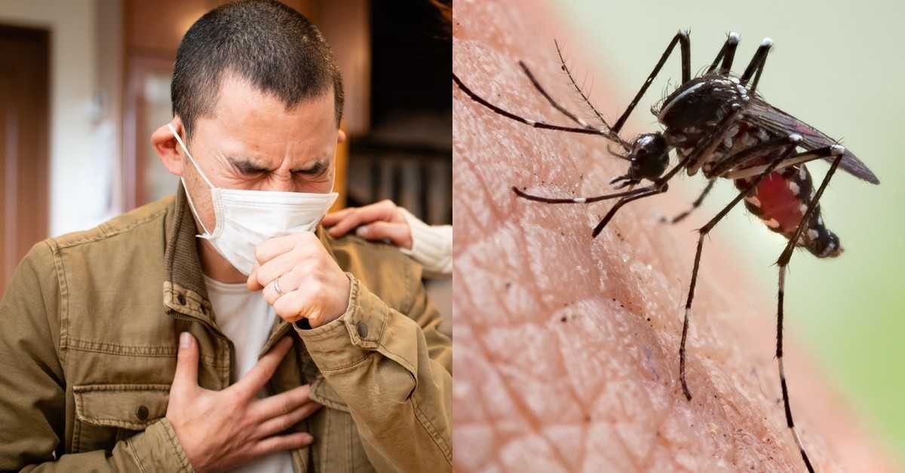
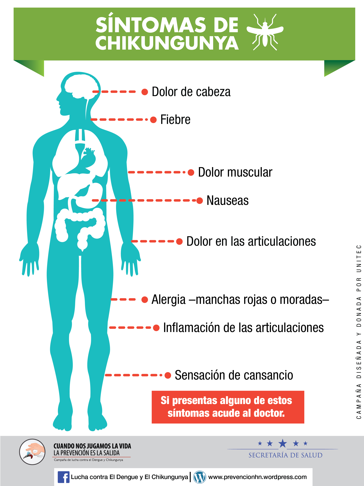

Chikunguya
El chikungunya es una enfermedad vírica transmitida a los seres humanos por mosquitos infectados con el virus chikungunya. Los mosquitos implicados son el Aedes aegypti y el Aedes albopictus. La enfermedad fue descrita por primera vez durante un brote en el sur de Tanzania en 1952, y actualmente se la ha identificado en Asia, África, Europa y, desde finales de 2013, en las Américas.
Los síntomas comienzan generalmente de 4 a 8 días después de la picadura de mosquitos, pero pueden aparecer en cualquier momento entre el día 2 y el día 12. El síntoma más común es una aparición repentina de fiebre, a menudo acompañada de dolor en las articulaciones. Otros síntomas incluyen dolor muscular, dolor de cabeza, náuseas, fatiga y erupción cutánea. El dolor severo en las articulaciones por lo general dura unos pocos días, pero puede persistir durante meses o incluso años. Las complicaciones graves son poco frecuentes, pero en las personas mayores, la enfermedad puede contribuir a la causa de la muerte.
SINTOMAS
Los síntomas aparecen de 3 a 7 días después de haber sido picado por un mosquito infectado. La enfermedad se propaga fácilmente. La mayoría de las personas que quedan infectadas presenta síntomas.
Los más comunes son la fiebre y el dolor en las articulaciones. Otros síntomas incluyen:
- Dolor de cabeza
- Hinchazón en las articulaciones
- Dolor muscular
- Náuseas
- Erupción
Copyright © 2021 IHSS – Instituto Hondureño de Seguridad Social. Todos los derechos reservados.
Tema: ColorMag por ThemeGrill. Funciona con WordPress.
Oficina Regional para las Américas de la Organización Mundial de la Salud
© Organización Panamericana de la Salud. Todos los derechos reservados.